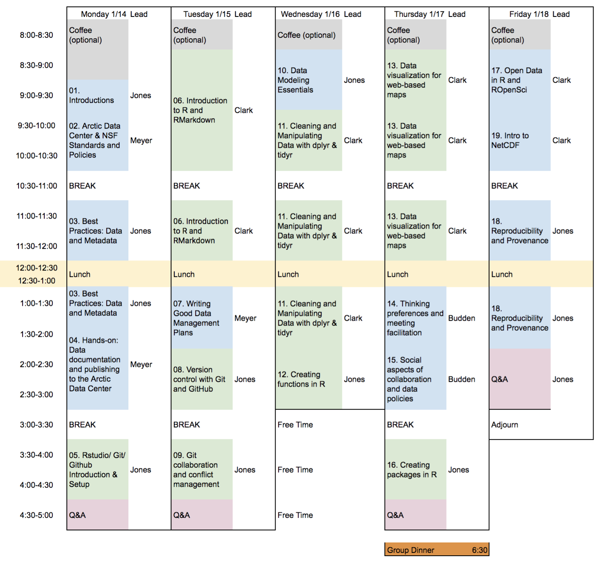

Arctic Data Center Training
January 14-18, 2019
1 Data Science Training for the Arctic Data Center

The Arctic Data Center conducts training in data science and management, both of which are critical skills for stewardship of data, software, and other products of research that are preserved at the Arctic Data Center.
1.1 Schedule

1.1.1 Acknowledgements
Work on this package was supported by:
- NSF award #1546024 to M. B. Jones, S. Baker-Yeboah, A. Budden, J. Dozier, and M. Schildhauer
Additional support was provided for working group collaboration by the National Center for Ecological Analysis and Synthesis, a Center funded by the University of California, Santa Barbara, and the State of California.